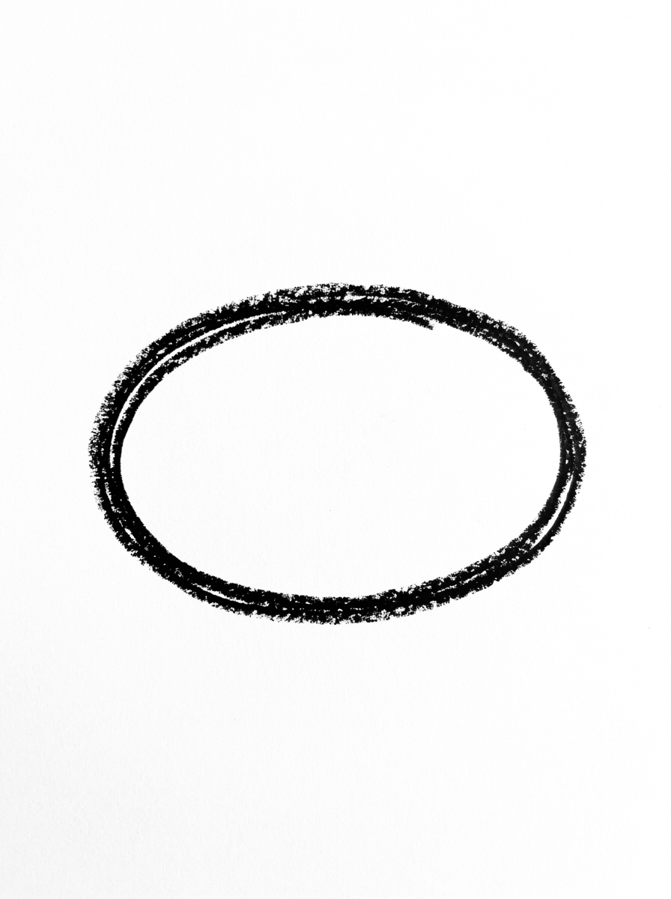
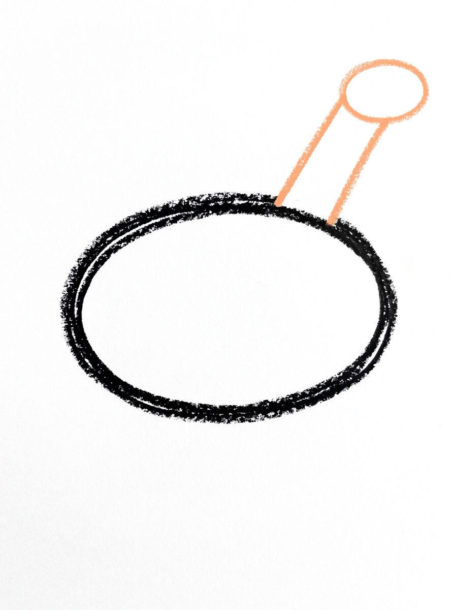
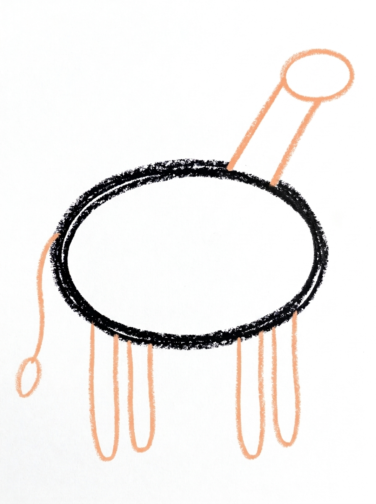
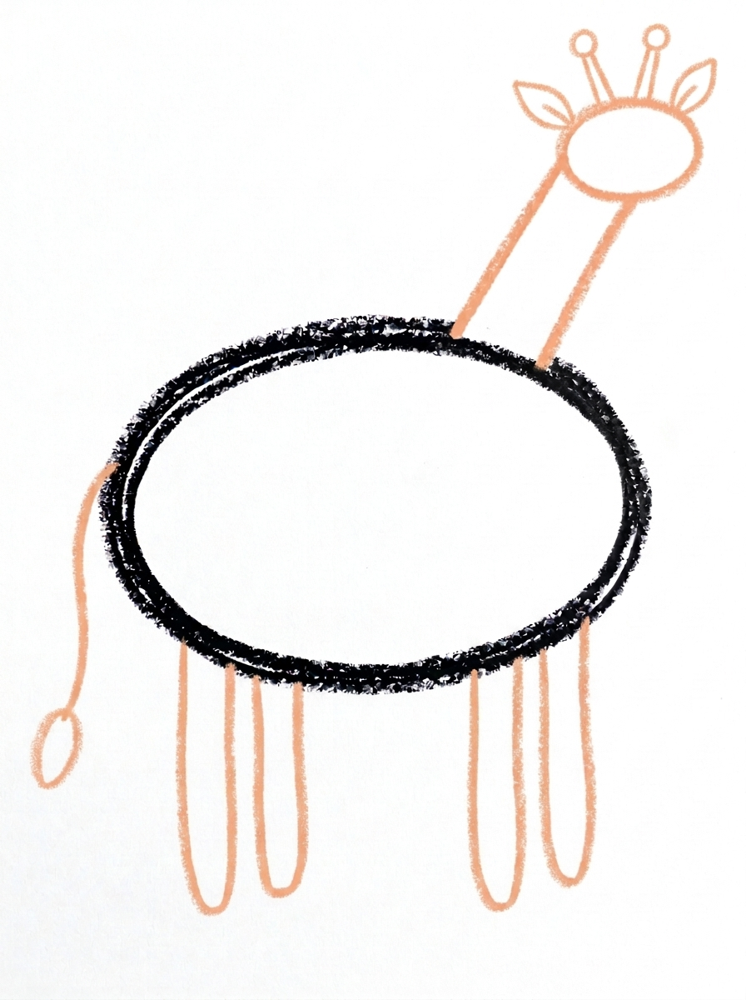
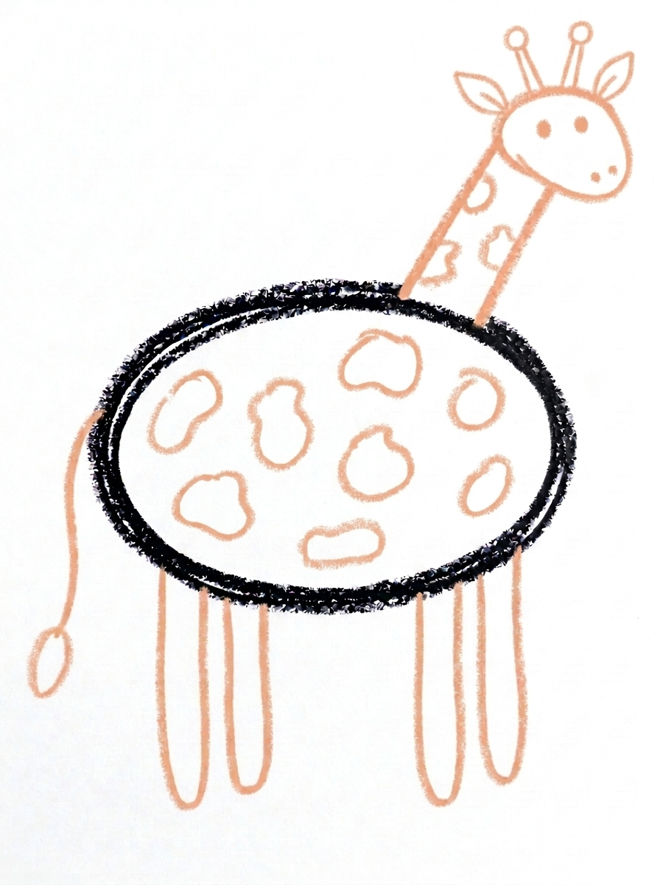

Giraffe Drawing for Kids How to Draw A Giraffe in 6 Easy Steps
Quick Answer
Draw a giraffe with one sideways oval body, a long thick neck band slanting up to a small oval head, four legs and a tufted tail, two ossicones and leaf-shaped ears, then about eight blob spots and a dot face before coloring. Made for ages 3 and up — no signup needed, just print and draw.
At a Glance
- Subject: How to draw a giraffe
- Ages: 3+
- Steps: 6 steps
- Time: ~15 min
- Difficulty: Easy
- Supplies: Paper, crayons
The giraffe is the tallest animal at the zoo, and drawing one is mostly about one thing: that wonderfully long neck. A sideways oval body sits low, a thick slanting band climbs to a small head at the top — and then the spots do the rest of the magic.
✏️ Draw Your Giraffe in 6 Easy Steps
One step per box — this step by step giraffe drawing shows each new part in a different color so kids can see exactly what changed.
Step 1: The Body

Draw one big oval lying on its side in the middle of your paper. This is your giraffe's body.
Step 2: The Neck and Head

Draw one long thick band slanting up from the front top of the body — this is the long neck. At its top end, draw one small oval lying on its side for the head.
Step 3: The Legs and Tail

Draw four long thin legs hanging straight down from the bottom of the body — two near the front and two near the back. Then draw one thin curved tail hanging from the back end of the body, with one small oval tuft at its end.
Step 4: The Ossicones and Ears

On top of the head, draw two short lines, each topped with a small circle — those are the giraffe's ossicones (its little horns). Just below them, draw two small leaf-shaped ears.
Step 5: The Spots and Face

Draw about eight roundish blob spots of different sizes inside the body and on the neck. Then draw two round dot eyes on the head, one on each side, and two tiny dot nostrils at the front end of the head.
Step 6: Color It In

Color your giraffe! Pale golden yellow for the body, neck, head, legs and ears, medium brown for the spots, dark brown for the ossicone circles and the tail tuft, and black for the eye and nostrils. Great drawing!
📊 Giraffe Drawing by Age
Every age can join in — just adjust the job.
| Age | What they can do | Tip |
|---|---|---|
| 3-4 | Draw the body oval and a thick neck band with help, then stamp on big spots happily and freely. | Start the body low on the page and leave the whole top half empty — the neck and head need all of it. |
| 4-5 | Draw body, neck and head in order, add legs, tail and spots, and place the dot eyes. | Make the neck a thick band with two sides, not a single line — a one-line neck leaves the head floating. |
| 6+ | Draw the complete giraffe alone, spacing varied spots across the body and neck and adding the ossicones neatly. | Ask them to draw a tall acacia tree beside it, flat-topped, so the giraffe has leaves to reach for. |
🖨️ Download Your Free Giraffe Drawing Printable
The printable lays out all 6 steps one per box, big enough for little hands — kids draw right alongside each step.
⬇️ Open Free Printable 🖨️ Print🎁 Free printable for ages 3+
🦒 Tallest Giraffe Challenge
How tall is your giraffe? Measure the finished drawing's neck with finger spans, then with crayon lengths, and write the number beside it — then draw a flat-topped acacia tree next to the giraffe and stretch its neck in the drawing until its head reaches the leaves. For a group activity, everyone draws a giraffe and the class or family compares: whose neck is longest, whose has the most spots, and can anyone draw one that reaches the top of the page?
What You'll Need to Draw A Giraffe
You need paper, a pencil and crayons or markers: pale golden yellow for most of the giraffe, medium brown for the spots, dark brown for the ossicone circles and tail tuft, and black for the eyes and nostrils. Turn the paper upright (portrait) before starting — a giraffe's neck appreciates the extra height, and so will your artist.
What They're Learning
This tutorial is a first lesson in proportion: the neck must be long and the body placed low so everything fits, which means planning the page before drawing — a real composition skill. The neck practices drawing a thick band (two parallel slanting lines), the spots use free-form blob shapes in varied sizes, and the ossicones add the new word and shape combination of a line topped with a circle. Counting appears too, in four legs, two ears, two ossicones and about eight spots.
Make It Yours
A baby giraffe is the same drawing with a shorter neck and bigger spots relative to its body — sweet next to a tall parent version. Set the scene with a flat-topped acacia tree and a low sun for a savanna picture, or let the giraffe reach its head down to a drawn bush for a bendy-neck variation. Silly versions work too: heart-shaped spots for Valentine's Day, or a giraffe in a scarf long enough for that neck, which is a drawing project all by itself.
🛒 Our Favorite Drawing Supplies
These are the supplies we reach for in our own home — washable (because kids), quality paper, and enough colors to avoid fights.
As an Amazon Associate, MomYouNeedThis earns from qualifying purchases — at no extra cost to you.
💡 Giraffe Drawing Tips for Parents
The whole giraffe hinges on Step 2, and the trick is proportions, not talent. Start the body low — in the bottom third of the page — then draw the neck as a long, thick band slanting up, two lines side by side, all the way to near the top before adding the small head. If the neck starts too short or the body sits in the middle, the head gets squeezed off the page, which is the number one giraffe frustration. A fresh sheet with a lower body fixes it faster than any adjustment.
At Step 5, encourage spots of genuinely different sizes — a few big, several medium, a couple of small ones dotted between — spread over the neck as well as the body. Uniform polka dots look like a costume; varied blobs look like a giraffe. Real giraffes each have a unique pattern, so your child's arrangement is scientifically one of a kind.
✏️ Giraffe Drawing Step by Step
This giraffe drawing is assembled in size order: the big body oval first, then the neck and head in one step, then legs and tail, then the small head details — and the spots, the part everyone waits for, only in Step 5, once there is a whole giraffe standing there to put them on.
The part to watch is the neck's width. The neck is a thick band — two long lines running side by side — and it has a job waiting for it: Step 5 puts spots on the neck as well as the body. If the two lines drift toward each other, the band pinches into a string, and there is no room left on it for a single spot.
The remedy is to keep the band's two lines about a finger's width apart, from the body all the way up to the head. If they do pinch in the middle, widen the band before Step 3 — legs and a tail are much easier to add to a giraffe whose neck is already the right thickness.
See free giraffe printable for more.
✏️ One Shape Per Step, Six Steps Total
Run a joint check on this giraffe drawing after Step 2: the neck band has two ends, and both must be closed. At the bottom, both lines of the band should run into the body oval; at the top, both should meet the head oval. A line that stops short leaves the head, or the body, hanging off the band.
After Step 4, check the order on the head from top to bottom: first the two ossicones — a short line topped with a small circle, twice — and just below them, the two small leaf-shaped ears. Ears sitting above the ossicones is the usual mix-up, and it is a two-second fix at this stage.
Finish with two counts. Legs: four, plus the thin curved tail with its small oval tuft at the back. Spots: about eight blobs, shared between the body and the neck — a giraffe with spots only on its body has missed half of Step 5.
See free giraffe printable for more.
🦒 Getting the Long Neck Right
Draw the tutorial a second time at half size and the two giraffes become a mother and calf. Every step is the same; only the body oval shrinks and the neck band shortens, which is exactly what makes the small one read as young instead of just little.
Give each giraffe its own arrangement of spots in Step 5 — crowded on one, sparse on the other — and colour both the same pale gold and medium brown. Stood side by side on one page, the pair turns two practice drawings into one finished picture.
See free giraffe printable for more.
❓ Giraffe Drawing FAQs
What is the easiest way to draw a giraffe?
Start with a sideways oval for the body, then draw the neck as one long thick band slanting up from the front top of the body, with a small sideways oval head at its top end. Legs, a tufted tail, ossicones, ears and about eight spots finish it — the six steps lay it out in order.
What age is this giraffe drawing for?
It is made for ages 3 and up. Younger kids will love the body and the spots and may need help with the long neck band, while older kids can manage the proportions and the small head details on their own.
What supplies do we need?
Paper and a pencil for drawing, plus crayons or markers for coloring: pale golden yellow, medium brown, dark brown and black. A tall sheet of paper — or a page turned upright — helps fit that neck.
Is the printable really free?
Yes — every printable on MomYouNeedThis is 100% free to download and print. No signup, no payment, just tap the download button.
How do I print it?
Open the free PDF and print it at 100% scale, not 'fit to page', so the step pictures come out at the size they were designed. One page is the whole tutorial, and you can print fresh copies whenever your child wants another try.
What are the two little horns on a giraffe called?
They are called ossicones — short, skin-covered knobs that both male and female giraffes are born with. In the tutorial they are just two short lines topped with small circles, drawn in Step 4, right above the leaf-shaped ears.
How many spots should the giraffe have?
About eight in this tutorial, in different sizes across the body and neck — but real giraffes all have unique patterns, so there is no wrong number. More, fewer, bigger or smaller spots are all correct giraffe behavior.
My child's giraffe ran out of page before the head. How do we fix that?
It happens to every giraffe artist once. Start the body lower on the page — the bottom third — so the neck owns the space above it, and turn the paper upright if needed. A giraffe is a tall animal, and planning for tall is part of the lesson.
📚 Keep Exploring
- ✏️ All 53 Drawing Tutorials 53 free step-by-step drawing tutorials for kids.
- 🐾 Animal Coloring Free printable animal coloring pages for little learners.
- ✏️ Drawing Practice Free printable drawing pre-writing worksheet for toddlers.